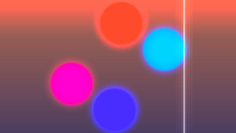

HomeAccueil / ExamplesExemples
Bloom glowLueur autour des zones claires
Bright areas are thresholded then spread with a ring blur before being added back to the image.On seuille les zones claires puis on les étale avec un flou à anneaux avant de les rajouter à l'image.

CategoryCatégorie: Post-processingPost-traitement - lueur_bloom.glsl - 29 lineslignes - File on GitHubFichier sur GitHub
In the program: Examples, choose it, Add to the list. Or copy the code into a file next to the program and drop it on the window.Dans le programme : Exemples, choisissez-le, Ajouter à la liste. Ou copiez le code dans un fichier et glissez-le sur la fenêtre.
CodeCode
lueur_bloom.glsl
// SPDX-License-Identifier: GPL-3.0-or-later
// Copyright (C) 2026 Patrick JAILLET
// fr: Lueur autour des zones claires — On seuille les zones claires puis on les étale avec un flou à anneaux avant de les rajouter à l'image.
// en: Bloom glow — Bright areas are thresholded then spread with a ring blur before being added back to the image.
vec3 scene(vec2 uv) {
float a = iTime * 0.5;
vec3 col = mix(vec3(0.1, 0.15, 0.4), vec3(0.9, 0.5, 0.3), uv.y * 0.5 + 0.5);
for (int i = 0; i < 4; i++) {
float f = float(i);
vec2 c = 0.35 * vec2(cos(a + f * 1.57), sin(a * 1.3 + f * 1.57));
col = mix(col, 0.5 + 0.5 * cos(f + vec3(0.0, 2.0, 4.0)), smoothstep(0.17, 0.15, length(uv - c)));
}
col = mix(col, vec3(1.0), smoothstep(0.012, 0.0, abs(uv.x - 0.5 * sin(a))) * 0.6);
return col;
}
void mainImage(out vec4 fragColor, in vec2 fragCoord) {
vec2 uv = (fragCoord - 0.5 * iResolution.xy) / iResolution.y;
vec3 base = scene(uv), glow = vec3(0.0);
for (int r = 1; r <= 3; r++)
for (int i = 0; i < 12; i++) {
float a = float(i) * 0.5236 + float(r);
vec3 s = scene(uv + float(r) * 0.02 * vec2(cos(a), sin(a)));
glow += max(s - 0.6, 0.0);
}
fragColor = vec4(base + glow * 0.12, 1.0);
}